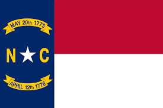

My name is Jeremy Sanders. I was born in Illinois, but spent nearly all my life in North Carolina. I am currently studying Software Engineering. I love nature, learning, and spending time with others.
About Me
North Carolina
North Carolina is a southeastern U.S. state known for its diverse landscapes, from the Appalachian Mountains to its scenic coastline. It has a rich history and is home to major cities like Charlotte and Raleigh. The state is a hub for technology, education, and finance. With its blend of natural beauty and modern growth, North Carolina offers both charm and opportunity.